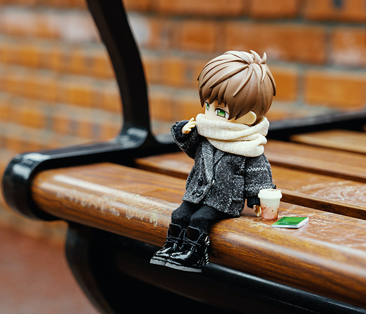

Table of Contents
Once you've looked through all the different kinds of figurines you're able to buy, you can decide on what you'd like to pursue. I'll help recommend good practices to take into account when making a purchase. Along with this, I will offer some brands that might help you find what you're looking for.
So, one of the first things you must take into account before purchasing anything is your budget.
That's pretty self-explanatory but it's good for ensuring that you don't impulsively buy anything too expensive.
Your budget can vary depending on whether you're trying to buy an action figure, a statue, or a model kit. The amount that I recommend you set aside for each, assuming you want some decent quality: around $100 for action figures, $150 for statues, and $80 for model kits.
It looks daunting but it's simply a good place to start due to the pricing of nicer figures.
To go a bit more in depth with the different types of figures you can buy, the brand you choose must be based on what it is you're trying to collect. Different brands specialize in different figure types, although plenty also provide products for all three types. To list a few of my favorite brands as a recommendation for where to start:
All of these brands have figures of varying, but still good, quality that can really help kickstart your collection right. Good Smile, MegaHouse and Kotobukiya have great products for all three types. Max Factory, Sentinel, and Hot Toys are great for specializing in action figures.
There are two main choices you have here. You can either buy from any of those brands' existing stores, or you can buy your figures via third party.
Since plenty of figures are made in other countries, there tends to be the added cost for imports. Buying directly from a brand's site means that you'll just have to pay for this through higher shipping costs. While if you buy through third party source, typically shipping will be the same as normal, the price of the figure itself will just be inflated.
If you want to make things simpler for yourself, plenty of figures are readily available on Amazon for convenience. While I always recommend buying from a brand directly to avoid more absurd inflated prices, if you're willing to put in the extra money, the availability for third party sites like Amazon is always there.
Lastly, it is good to decide whether or not you want to try and purchase figurines new and unopened or used. There are plenty of sites, or even Amazon again, that allow people to put their old figures up for resale.
Buying any type of figure used is a valid way to save money, especially on higher quality stuff. You just have to be willing to take the risk that it might be slightly damaged, or even missing pieces entirely.
If that's a risk you're willing to take, then I say go for it. Although I will say that most people are willing to give you indication for whether or not a figure is incomplete or damaged.
Whether you go for entirely new figures, or the used figures to save more money, I wish you all happy hunting regardless!